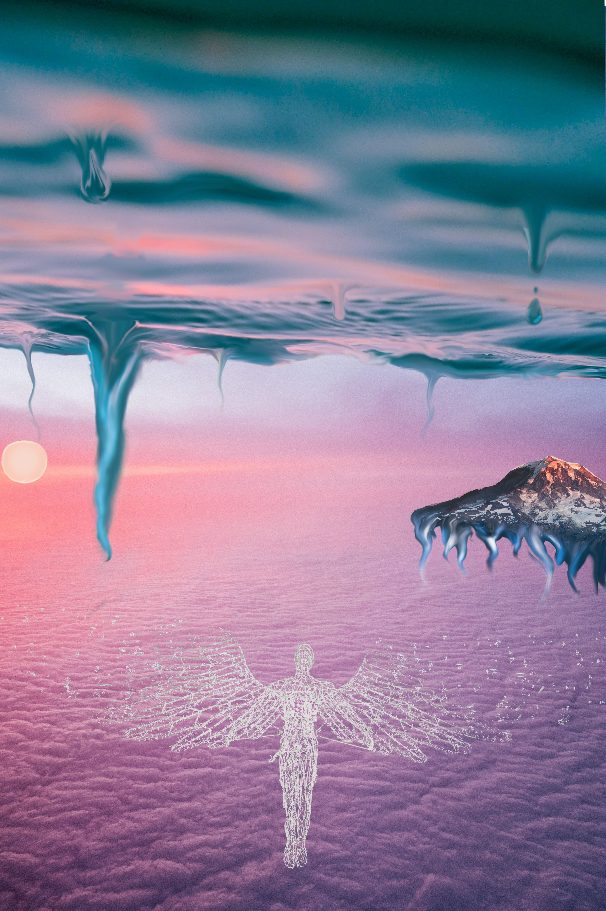

Mitt första projekt i Digitalskapande
Här så Photoshopa jag ihop några bilder och jag tycker det blev bra för att vara mitt första projekt. Jag ville skapa en cool kontrast och typ göra så att vattnet möter himmlen men att det är uppoch ner så vattnet är där uppe. Här är en länk till min presentation till projekt 1 Projekt 1
Projekt 2
.JPG)
.png)
Det här var mitt andra projekt där jag kalkylerade en bild på mig och mina vänner. Det här är nog det projekt som jag la ner minst tid på och blev minst nöjd med. Jag fick även väldigt dåligt betyg på den. Man skulle kunnat förbättra den så mycket men jag orkade inte.
Projekt 3
I den här uppgiften så gjorde jag polly art det blev fint men va rätt så långtråkigt efter en stund för allt man gjorde var trianglar. Sen var det lite svårt att ta olika nyanser av färgen vid ställen där färgen var väldigt lika. Men det blev fint tycker jag ändå. En annan svår sak va att man var tvungen att göra trianglarna i ett mönster som matcha bildens drg för i början när jag bara gjorde trianglar hur som hels blev mönstert inte fint. Men jag fick till det till slut. Här är länken till presentationen till projekt 3 Projekt 3
Projekt 4
.png)
Den här bilden är nog en av dom som jag är mest nöjd över om inte nöjdast med. Den tog rätt så lång tid att göra men det var värt det för det var kul och jag lärde mig nya saker.